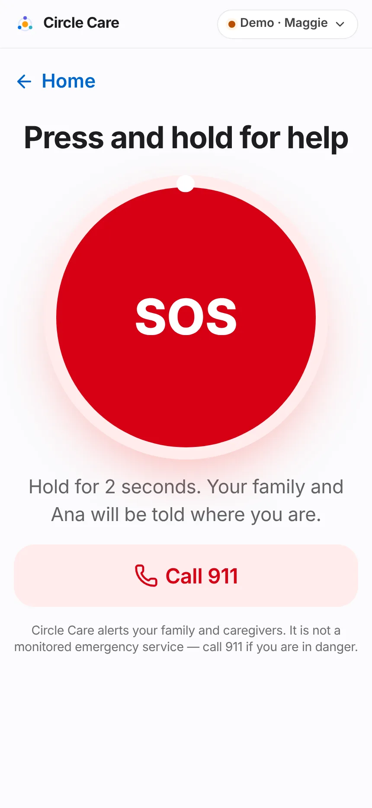
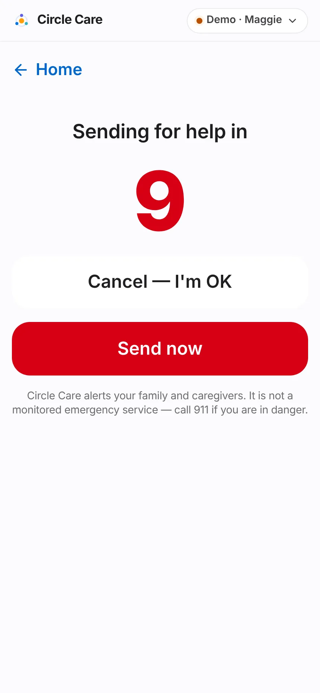
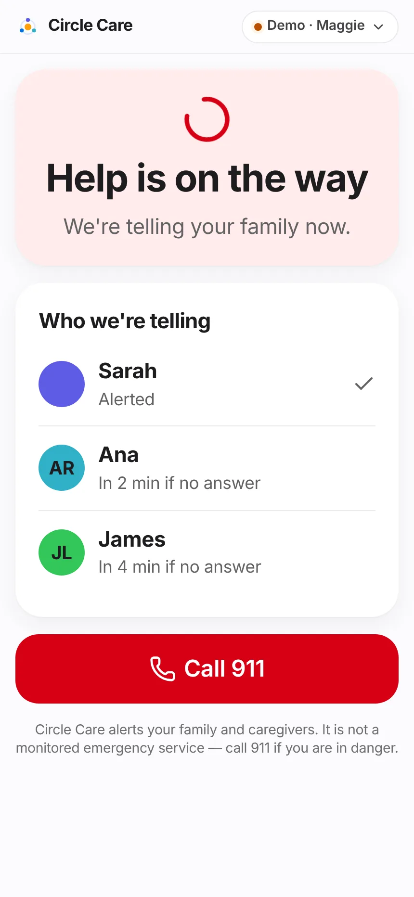
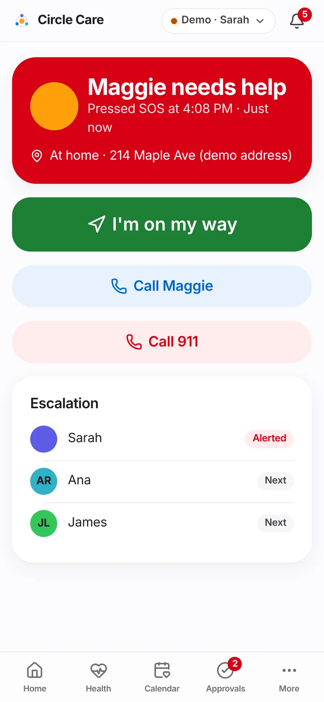
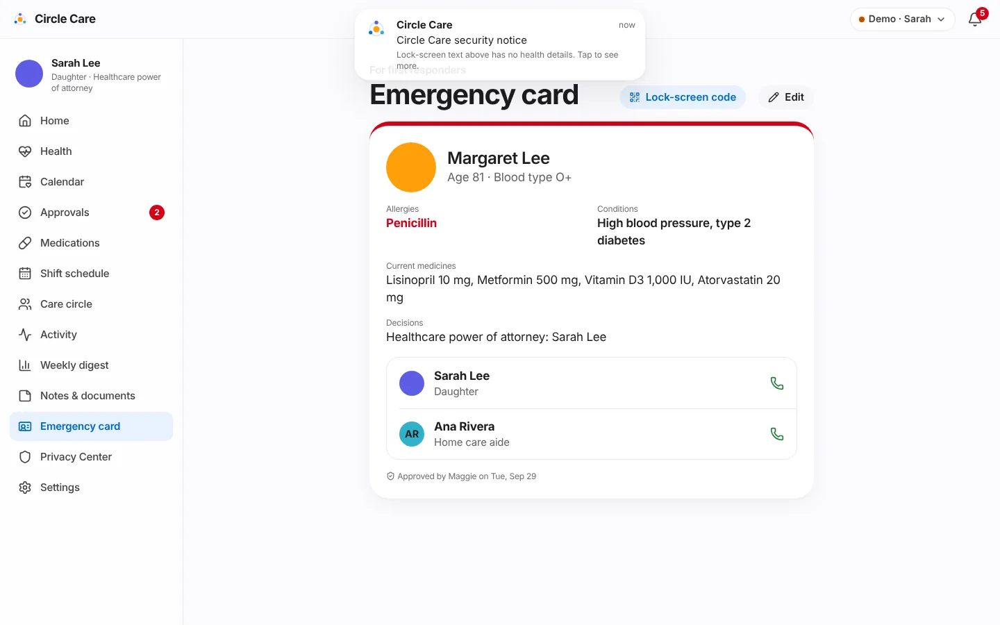

SOS & emergency¶
Overview¶
What. Maggie presses and holds SOS. After a 10-second chance to cancel, the people on her escalation list are alerted one after another — Sarah first, then Ana after 2 minutes, then James after 4 — until someone taps "I'm on my way." Maggie sees who is coming. The responder closes the event with a note of what happened. An emergency card gives first responders her allergies, conditions, medicines and contacts, and a daily check-in catches the quieter emergencies.
Why. A single phone call to a single relative is a fragile safety net. Personal emergency buttons exist, but they rarely tell the elder who is coming, and they are disconnected from the family's daily plan.
Business value. SOS is the feature families cite first when deciding to adopt a care app. Fast, visible acknowledgement is a pilot success metric (median alert answered in under 10 minutes — see Pilot & feedback).
Not an emergency service
Every SOS screen says: "Circle Care alerts your family and caregivers. It is not a monitored emergency service — call 911 if you are in danger." A Call 911 button is always visible.
User journey¶
Raising an SOS (elder)¶
- Maggie taps the red SOS tile on her home screen.
- Press and hold for help — a large round button with a progress ring. "Hold for 2 seconds. Your family and Ana will be told where you are." A secondary Call 911 button sits below.
- When the ring completes, Sending for help in 10 counts down. If read-aloud is on she hears "Sending for help in 10 seconds. Tap cancel if you're OK."
- She can tap Cancel — I'm OK ("Cancelled. No one was alerted.") or Send now.
- At zero, Help is on the way — "We're telling your family now." Who we're telling lists each person: Alerted, In 2 min if no answer, In 4 min if no answer.



Responding (guardian, caregiver, family)¶
- Every guardian and caregiver screen shows a red bar: Maggie pressed SOS at 4:08 PM · Respond. A critical banner also appears.
- The responder screen: Maggie needs help — "Pressed SOS at 4:08 PM · Just now", location "At home · 412 Elizabeth St, Noe Valley, San Francisco (demo address)", buttons I'm on my way, Call Maggie and Call 911, and the escalation list with Alerted / Next / Responding badges.
- Tapping I'm on my way stops escalation and notifies everyone: "Sarah is responding to Maggie's SOS."
- Maggie's screen switches to the responder's photo and "Sarah is coming" — "Stay where you are if you can. Sarah answered at 4:09 PM."
- The SOS is closed either by Maggie (I'm OK now, recorded as "Resolved by Maggie — Sarah arrived.") or by the responder, who must type What happened? (required to close) and tap Mark resolved.
- With no active SOS, the responder page shows No active SOS — "Maggie is OK. If she presses SOS, you'll get an alert that breaks through silent mode." — and a list of Past alerts with outcomes.

Emergency card (CC-53)¶
- Emergency card (elder home link, caregiver tab, guardian menu) shows a red-topped card: name, age, blood type, Allergies (in red), Conditions, Current medicines (all non-paused medicines with strength), Decisions (directives) and one-tap calls to the first two people on the SOS list.
- The footer states "Approved by Maggie on …" or "Waiting for Maggie to approve".
- Edit: Maggie's edits save immediately. Sarah's edits are sent as Send to Maggie — "Maggie must approve changes before they appear on her card."
- Lock-screen code shows an example QR code: "Responders scan this code from Maggie's lock screen to open the card for 1 hour. Each scan is added to the access log."

Missed daily check-in (CC-52)¶
- If Maggie has not tapped I'm OK by the end of her check-in window (default 10:00 AM), she gets one more gentle prompt.
- Fifteen minutes later, Sarah is alerted and her home screen shows Maggie hasn't checked in — "Window ended at 10:00 AM — consider calling."
Functional details & business rules¶
SOS timing¶
| Rule | Value | Source |
|---|---|---|
| Hold to arm | 2 seconds (pointer, touch, or Enter/Space held) | ElderSos.tsx HOLD_MS |
| Cancel window | 10 seconds | CANCEL_S |
| Escalation chain (default) | Sarah → Ana → James | settings.escalation |
| Step interval | 2 minutes (guardian can choose 1, 2, 3 or 5) | settings.escalationDelayMin |
| Step calculation | step = floor(minutes since start ÷ interval), capped at the last person |
evaluate() in store.tsx |
| Escalation stops | When anyone acknowledges | sosAcknowledge |
| Only one active SOS | A second press while one is active does nothing | sosStart |
| Offline | If the device is offline, the event is marked via: "sms-fallback" and the elder sees "No internet — SOS will be sent by text message." |
ElderSos.tsx |
| Who may change the order | Guardian (Care circle → Who gets SOS alerts first, up/down arrows). Maggie can suggest a change. | CC-48 |
SOS states¶
| State | Meaning | Elder sees | Responders see |
|---|---|---|---|
active |
Sent, no one has acknowledged | Help is on the way | Red bar Maggie pressed SOS · Respond |
acknowledged |
Someone tapped I'm on my way | Name is coming · I'm OK now | Name is responding · outcome box |
resolved |
Closed with an outcome | Home screen | Past alerts |
Emergency card fields¶
| Field | Demo value | Editable by |
|---|---|---|
| Allergies | Penicillin | Elder (save) · guardian (needs elder approval) |
| Conditions to share | High blood pressure, type 2 diabetes | Same |
| Decisions and directives | Healthcare power of attorney: Sarah Lee | Same |
| Blood type | O+ | Same |
| Current medicines | Derived from the medication list (paused ones excluded) | Not edited here |
| Contacts | First two people on the SOS list | Not edited here |
Permissions & privacy¶
From src/data/policy.ts:
| Resource / action | Elder | Guardian | Family | Pro (on or off shift) |
|---|---|---|---|---|
sos read |
✓ | ✓ | ✓ | ✓ |
sos write (raise / resolve as elder) |
✓ | — | — | — |
sos respond (acknowledge / resolve) |
— | ✓ | ✓ | ✓ |
emergencyCard read |
✓ | ✓ | ✓ | ✓ |
emergencyCard write |
✓ | — (propose) | — | — |
Emergencies are always shared
sos, emergencyCard and circle are in ALWAYS_SHARED: they keep working for family and caregivers even when Maggie pauses sharing. Professional caregivers can respond to SOS even when off shift.
Every emergency-card view is written to the access log ("viewed the emergency card").
Notifications¶
| Trigger | Recipients | Severity | Lock-screen text | In-app detail |
|---|---|---|---|---|
| SOS sent | Guardian, caregiver | Critical | Emergency alert from Circle Care | Maggie pressed SOS. Alerting Sarah first. |
| Escalation step | Guardian, caregiver | Critical | Emergency alert from Circle Care | No one has responded yet. Now also alerting Name. |
| Acknowledged | Elder, guardian, caregiver | Info | Update from Circle Care | Name is responding to Maggie's SOS. |
| Check-in missed (elder prompt) | Elder | Info | You have a reminder from Circle Care | Good morning, Maggie. Tap "I'm OK" so Sarah knows you're fine. |
| Check-in missed (+15 min) | Guardian | Warning | Circle Care needs your attention | Maggie hasn't checked in today (window 08:00–10:00). Consider calling her. |
Critical banners are visually distinct (red). The guardian setting Emergencies break through silent mode ("SOS and missed high-priority doses always alert you") is on by default (CC-50).
Accessibility¶
- The SOS button is keyboard-operable: holding Enter or Space arms it; the button's label is "Press and hold for 2 seconds to send SOS."
- The countdown number is an
aria-live="assertive"region; spoken prompts accompany each stage when read-aloud is on. - Responder buttons are extra-large; Call 911 uses a distinct red style.
- Red is reserved for emergencies across the product.
Data captured¶
| Field | Entity |
|---|---|
id, startedAt, status, step, via |
SosEvent (on send) |
responderId, acknowledgedAt |
SosEvent (on acknowledge) |
resolvedAt, outcome |
SosEvent (on resolve) |
allergies, conditions, directives, bloodType, approvedByElder, approvedAt |
Settings.emergencyCard |
date, at, mood |
Checkin |
Edge cases & error states¶
| Situation | Behaviour |
|---|---|
| Finger slips off the button before 2 s | Progress resets; nothing is sent |
| Elder cancels during countdown | Nothing is recorded; spoken "Cancelled. No one was alerted." |
| Responder tries to close without a note | Mark resolved stays disabled |
| Everyone on the chain has been alerted | Step stays on the last person; alerts continue to show as active |
| A member is removed from the circle | They are removed from the escalation chain automatically |
| Presenter Trigger SOS from Maggie | Starts an SOS instantly (skips hold and countdown) |
Test coverage¶
| Type | Test |
|---|---|
| E2E | Elder holds SOS, countdown, sends (2.3 s mouse hold → Sending for help in → Send now → Help is on the way) · Guardian acknowledges SOS, elder sees responder, resolves (Sarah is coming → I'm OK now) · CC-14 elder lock option; CC-48 elder suggests SOS-list change |
| Unit | rules.test.ts — missed check-in prompts the elder first, then the guardian 15 minutes later (CC-52). policy.test.ts — sos and emergencyCard permissions for every role, and that they survive Pause sharing |
| Gap | No unit test asserts the SOS escalation step timing; it is exercised only manually and through the UI |
Known limitations & production gaps¶
| In the prototype | In production (planned) |
|---|---|
| Alerts are in-app only, shown to the guardian and caregiver views | Push with critical-alert entitlement (iOS) / high-priority channels (Android), plus SMS and voice-call fallback to each person on the chain (R2 Native apps) |
| Location is a fixed demo address in Noe Valley, San Francisco | Device location at the moment of SOS, shared only with responders |
| SMS fallback only sets a flag | Real SMS sent from the device or server when offline |
Call 911 is a tel: link |
Optional integration with a monitored response partner; legal review of claims |
sosStart is not permission-checked so the presenter can trigger it |
Only the elder's device can raise SOS |
| Lock-screen QR is a decorative placeholder | Signed, time-limited emergency link (1 hour) with access logging |
| Emergency card age ("Age 80") is hard-coded | Derive age from date of birth |
| Fall detection, inactivity and wandering alerts not built | R3 Wearables & Fall Detection |
Related pages¶
- Elder experience
- Alerts & notifications
- Care circle & access — escalation order
- Guardian dashboard & approvals — check-in window, SOS interval